How to use Recycling Returns
Every crate the rec team count lands on the dashboard. This guide shows what Rec Admin does with it, from the count to NetSuite.
1The five stages and what moves an order on
An order moves left to right down the sidebar. It never skips a stage, and the count beside each stage is what is waiting there.
- Awaiting countThe SO is in, crates not all counted. Moves on when the last crate is counted.
- No SO yetCounted as a drop-off with no real SO. Moves on when you Link SO.
- CountedFully counted, WTN made. Moves on when you Mark WTN sent.
- WTN sentWith the customer, waiting for NetSuite. Moves on when you enter the number and Mark processed.
- Processed on NetSuiteDone. The NetSuite number is on record. End of the line.
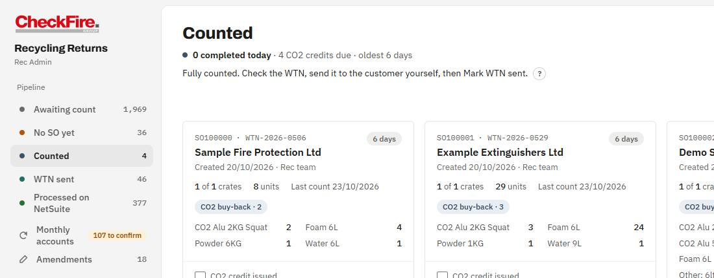
Awaiting count
Nothing to do here until the rec team count the crates on the tablet. Close short only when the customer says fewer crates are coming. It issues the WTN for what was actually counted and cannot be undone.
No SO yet
Drop-offs the rec team counted without a real SO. Raise the SO in NetSuite, type it in the card and press Link SO. See section 4.
Counted
Press View WTN and check it. Send it to the customer yourself, then press Mark WTN sent. The app does not email it.
WTN sent
When the SO or invoice exists in NetSuite, type its number into the card and press Mark processed on NetSuite. The number is required.
Processed on NetSuite
The record. Nothing to do. Reprint a WTN or open Details if someone asks. The Process in NetSuite button is switched off: that is a later phase.
Archive
Orders still uncounted three months after the SO was raised move here by themselves. If the delivery is still expected, press Still expected, back to Awaiting and it picks up where it left off.
2Daily routine for Rec Admin
About fifteen minutes. Work from the top of the sidebar down, and stop at any stage showing 0.
- Monthly accounts: the amber flagIf it says "to confirm", confirm the visits (section 5). Remove empty drop-offs while you are there.
- No SO yetRaise the SO in NetSuite for each drop-off, then Link SO. Tick and Combine rows that are one delivery.
- CountedView each WTN, send it, press Mark WTN sent. Tick CO2 credit issued where a buy-back credit is due.
- WTN sentAnything done in NetSuite: enter its number and Mark processed on NetSuite.
- Awaiting countA glance. Crates counted today are in the Today line. Close short only when a customer has told you fewer are coming.
- Month-end, or when a Chubb pack is dueProcess the monthly account (section 5), then Reports for the counted vs billed check.
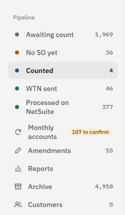
3The tablet (/count)
The rec team count crates on the tablet. Rec Admin never needs the tablet, but needs to know what it sends.
- Put your name in and press Start Counting. It goes on every crate you count.
- Take the photo first of the label or paperwork, every time. It is how the office traces a collection when a number does not match.
- If the paperwork has an SO or transfer order number, type it and press Find Collection. The C is added for SOs.
- If the customer dropped it off with no SO, press + Customer drop-off (no SO number).
Picking CNI0222 from the list rather than typing it
On a drop-off, start typing CNI0222 or Chubb. A list of monthly accounts appears under the box. Tap the account in the list. A name picked from the list is trusted, so the visit joins the Chubb roll-up with no further work.
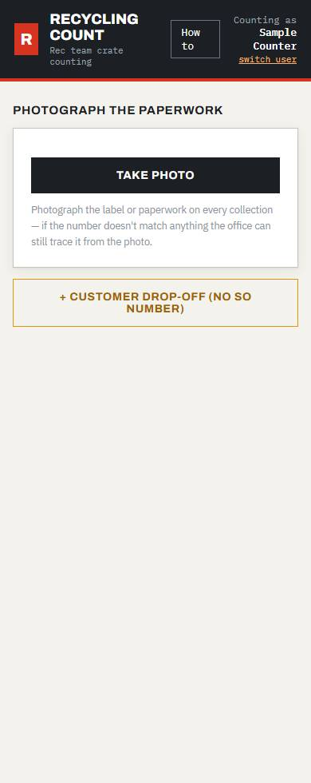
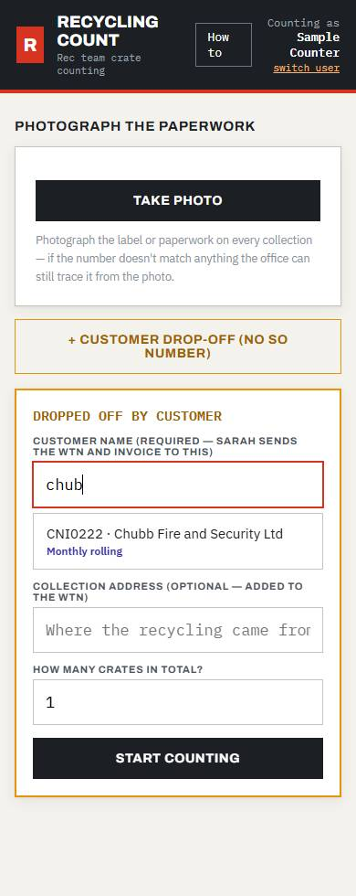
Drop-off or SO?
- SO: NetSuite raised the order and the paperwork has its number. Type the number. The order is already on the dashboard under Awaiting count.
- Drop-off: the customer brought it in and there is no SO yet. It lands on the dashboard as a drop-off. Rec Admin attaches the SO later, unless it belongs to a monthly account.
- Number does not match: the tablet offers to log it anyway. A photo is required. It goes to No SO yet for the office to trace.
4No SO yet: attaching an SO and combining drop-offs
A counted drop-off waits here until it has a real SO number.
Attach an SO
- Raise the SO in NetSuite.
- Open No SO yet, find the drop-off, type the SO in Attach the real SO.
- Press Link SO (or Enter). The order leaves this stage.
If NetSuite already created an empty order with that SO, the two are merged and the counts are kept. If you attach the wrong SO, press Wrong SO? Undo on the card and it goes back to its DROP number with its counts intact.
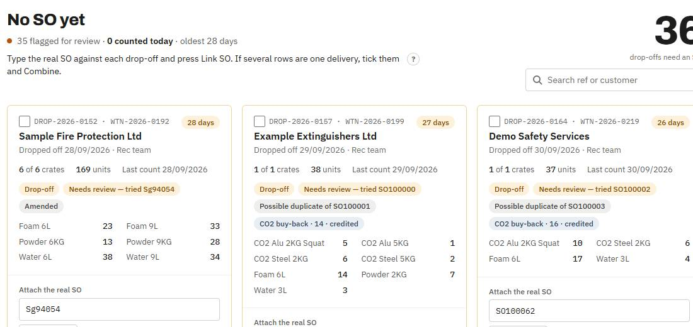
Combine drop-offs
The rec team can raise one drop-off per crate, so one delivery shows up as several rows. Tick the rows, then press Combine into one. The row that already has a real SO is kept, otherwise the oldest. Counts are re-sequenced, any WTNs already issued are recorded on the result, and it cannot be undone.
On Awaiting count, open drop-offs for the same customer also offer Merge N drop-offs into one.
This customer only ever drops off
Press No SO expected. The row leaves this stage and future drop-offs from them skip it.
5Monthly accounts
Chubb Fire and Security Ltd (CNI0222) is billed by the crate each month. Every open Chubb order sits on one card instead of making its own. Work down the four steps in the strip at the top of the card.
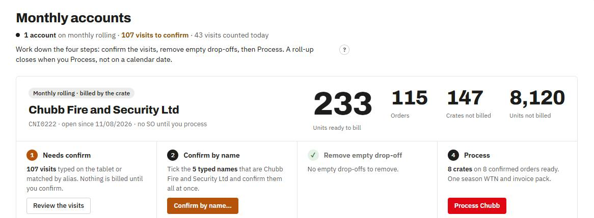
- Needs confirm. A visit typed on the tablet, or matched to Chubb by an alias, waits here. Nothing on it is billed. To check one, press Confirm on its row, or Not CNI0222 to send it to No SO yet.
- Confirm by name. Quicker: press Confirm by name…. It lists each typed name with how many visits used it. Tick only the names that are Chubb and press Confirm ticked names.
- Remove empty drop-off. A Chubb drop-off with no crates counted has nothing to bill. If nothing is coming, press Remove empty drop-off on its row. It is kept on record as removed, never deleted. NetSuite orders cannot be removed here: close them in NetSuite.
- Process. Press Process Chubb. The dialog lists the charge codes and units. Press Generate WTN & invoice pack. This makes one season WTN for every counted crate on a confirmed order. Crates counted later go on the next pack.
The WTN and invoice pack
- Press Download pack (PDF). It opens a printable page: choose Save as PDF.
- Send the pack to the customer yourself.
- Press Mark as sent. The pack moves to WTN sent.
- When NetSuite has the invoice, type its number into the pack card and press Mark processed on NetSuite.
Generated the pack by mistake? Press Void this pack before it is sent. Its visits go back on the roll-up and the WTN number is never reused.
Finish
An order whose counted crates are all billed shows Finish. Press it when no more crates are coming.
6WTN downloads and reprints
- Counted: View WTN opens it.
- WTN sent: Download WTN (PDF) opens the printable page: choose Save as PDF. Reprint opens it plain.
- Several at once: on WTN sent, tick the cards (or Select all) and press Download selected WTNs. One printable page, one WTN per sheet.
- Processed on NetSuite: each row has its WTN as a PDF link.
- Season WTNs (monthly packs) download the same way, from their card or the Monthly accounts page.
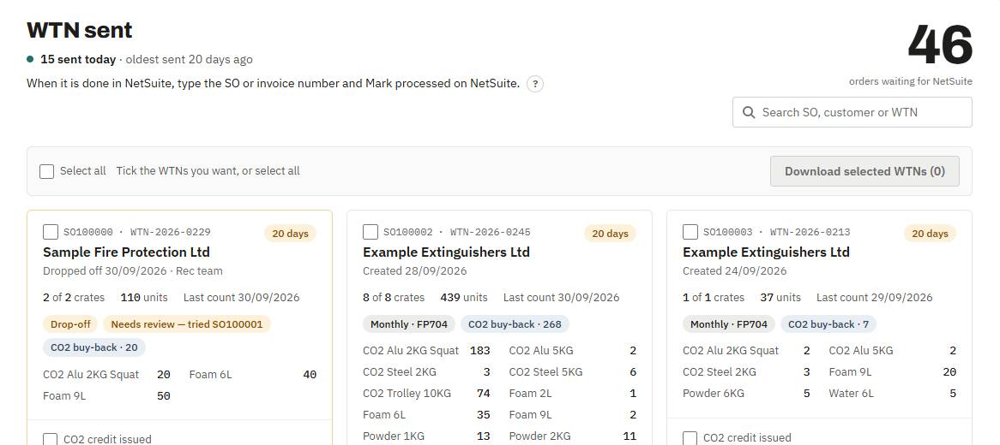
A count that has been amended gets a new WTN from the new counts, and the card shows Amended, resend WTN until you have re-sent it.
7Amendments
Use this to correct a count after the event. Every change is logged with who and why.
- Open Amendments and search by SO, DROP reference or customer. Click the order.
- Put your name in (it is remembered). Change the quantities, add a line or a crate entry, or remove an entry.
- Write the reason. It is required.
- Tick what must be redone: Clear the raised SO, Untick Invoiced, Untick CO2 credit. Only tick what applies.
- Press Save amendment. The WTN is regenerated from the new counts and flagged to be re-sent.
Then reprint the WTN, re-raise the SO in NetSuite and re-issue the invoice or credit if you ticked those.
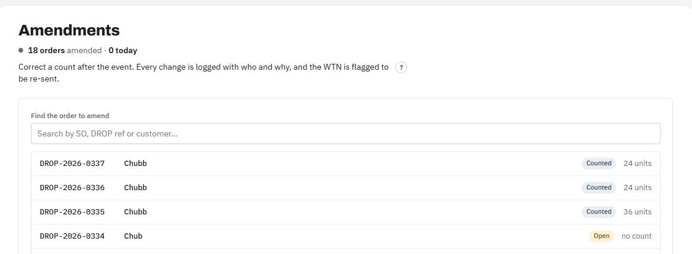
8Reports and the Defra receipt of waste download
Reports counts everything. The month-end figure is Billed in the Counted vs billed table.
- Filter by date range, customer, type, size, product or stage. The quick buttons jump to Marlowe, Mitie or Chubb.
- Counted is what the rec team logged. Amended is the net correction. Billed is what has been invoiced.
- Export Excel and Export PowerPoint take whatever the filters show.
Defra receipt of waste
- Pick Received from and Received to, or press All dates.
- Read the box on the right: it says how many waste transfer notes that is and how many files.
- Press Download spreadsheet.
It fills Defra's own template with one row per WTN. Defra's sheet holds 330 rows, so a long range downloads as several files. Dates follow when the waste was received, never when it was billed, so Process never moves a row between quarters.
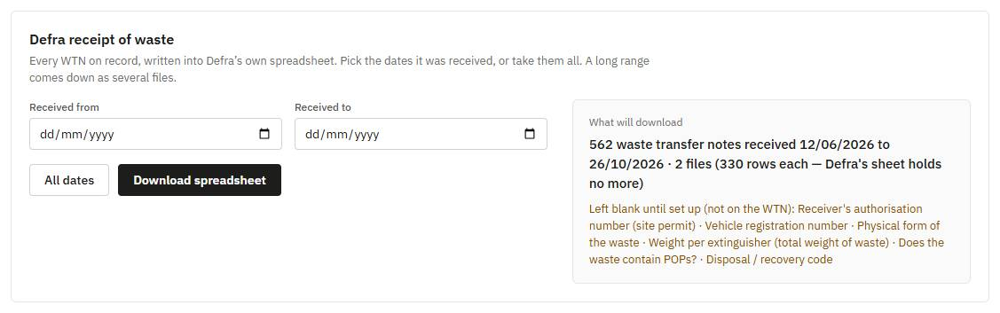
9Customers: billing mode
Each customer is billed per order or monthly rolling. Changing it needs the admin key, so it is a deliberate act.
Switch to monthly
- Open Customers and press Switch to monthly on the customer.
- The dialog says how many open orders move onto the roll-up. Put in your name and the admin key.
- Press Switch to monthly. Everything typed on the tablet, or matched only by alias, waits for Confirm.
Revert to per order
Press Revert to per order, check the dialog, enter your name and the admin key. Open orders go back to their own stages. Packs already sent stay as they are. It is refused in two cases, see the FAQ.
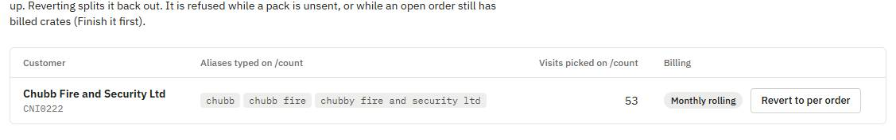
If the server has no admin key set, the buttons are replaced by a padlock and the page is read-only. Tell David.
10When something looks wrong
- Try the Classic view. It is the dashboard as it was before this one, on the same data. Use the Classic view link at the bottom of the sidebar. It is the fail-safe.
- An error banner at the top saying the data store is unavailable means nothing is being saved. Do not keep working. Tell David.
- A button does nothing, or a message says the roll-up changed. Refresh the page (it also updates itself every 30 seconds), then try once more.
- An order is in the wrong place. Check its stage rules in section 1. Open Details on the card for its counts and photos.
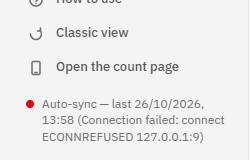
David Sweeney-Owen, Customer Experience Manager. Tell him what you pressed, the SO or DROP number, and what you saw.
11FAQ
- Why does a visit need Confirm?
- Anything typed on the tablet could be a different customer with a similar name, and a wrong match bills the wrong account. A name picked from the list is trusted. A name that is only typed, or matched by alias, is held until Rec Admin has looked.
- Why is Close short blocked on monthly accounts?
- An order on a monthly roll-up is billed by the crate, not as a whole order, so closing it short would break the billing. Use Finish on an order whose counted crates are billed, or Remove empty drop-off on one with nothing counted.
- Why is Revert to per order refused?
- Two reasons. A season pack exists that has not been sent: mark it sent, or void it. Or an open order already has crates billed on a season WTN: press Finish on it first, so nothing is billed twice. The message names the orders.
- Why can't I change an order that is on a pack?
- Once its crates are on a season WTN they are locked so they cannot be moved, billed again or deleted. Void the pack first if it has not been sent.
- Why does the Customers page say read-only?
- Billing changes need the admin key, and it has not been set on the server. Tell David.
- Does the app email the WTN?
- No. Download it, send it yourself, then mark it sent.